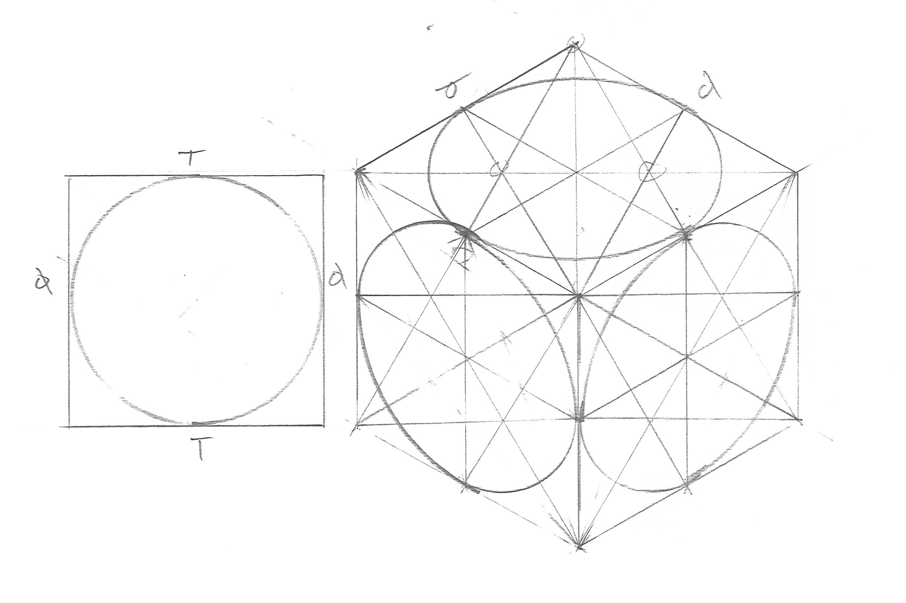

Assignment Deliverables
You will upload three separate, scanned, and labeled JPEGs of the following technical sketching practice exercises:
- Page of straight lines
- Isometric Cube with three isometric circles drawn freehand
- Isometric Cube with three isometric circles drawn with T-Square and Compass
Label the jpg files as:
- YYYYMMDD Lastname Firstname page of straight lines.jpg
- YYYYMMDD Lastname Firstname isometric cube and circles freehand.jpg
- YYYYMMDD Lastname Firstname isometric cube and circles t-square and compass.jpg
Instructions
Using loose sheets of paper, not in your sketchbooks, do each of the following sketching exercises on your own.
1. Page Filled with Straight Lines
Draw a minimum of 1 page filled with straight lines. It is a good idea to do this multiple times until you get the hang of it. It will help you in your sketching in all of your classes. Remember to draw from the shoulder. Video demo of drawing freehand straight lines.
2. Freehand Isometric Cube with Circles
After you have a page of good straight lines, then follow the video to draw an isometric cube with circles. Do this freehand. Freehand sketching is import for quickly communicating ideas, generating ideations, and solving design problems. Video demos of freehand isometric cubes and freehand isometric circles.

3. Isometric Cube with Circles using Drawing Tools
Once you finish the freehand isometric cube, draw the same cube on a new sheet of paper but this time use your drafting tools. Although freehand sketching is great and very important, often we have to take our freehand sketch ideas and refine them for presentation. Video demos of using drawing tools to draw isometric cubes and isometric circles with a compass.

Technical Sketching Exercise Videos
The videos below demonstrate how to practice drawing straight lines freehand. This is an important skill for ideation sketching, 3D modeling sketching and isometric crating. The videos then demonstrate how to draw an isometric cube with isometric circles on each face of the cube freehand. This is followed by a demonstration of how to draw an isometric cube with isometric circles on each face using a t-square, 30 / 60 triangle, and a compass.
1. How to Draw Straight Lines
2. Draw Isometric Cube Freehand
3. Draw Isometric Circle Freehand
4. Draw Isometric Cube with a T-Square
5. Draw Isometric Circle with a Compass
Grading Rubric
| Assessment | Weight |
|---|---|
| Page of Straight Lines | 10 points |
| Isometric Cube with Circles Freehand | 20 points |
| Isometric Cube with Circles with T-Square | 20 points |
| Sketch Documentation | 20 points |
| File Management | 10 points |